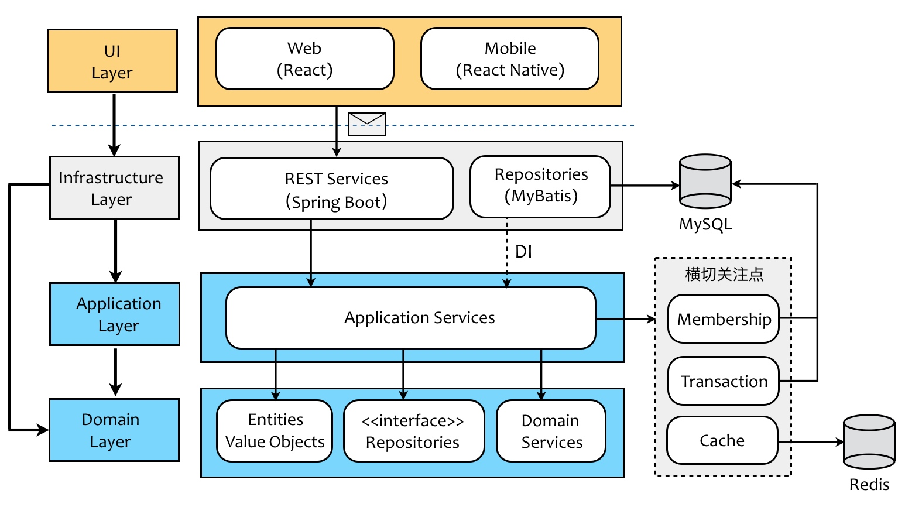
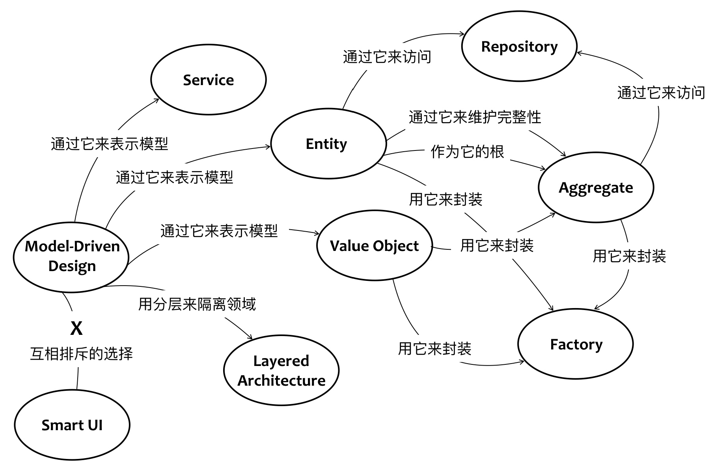
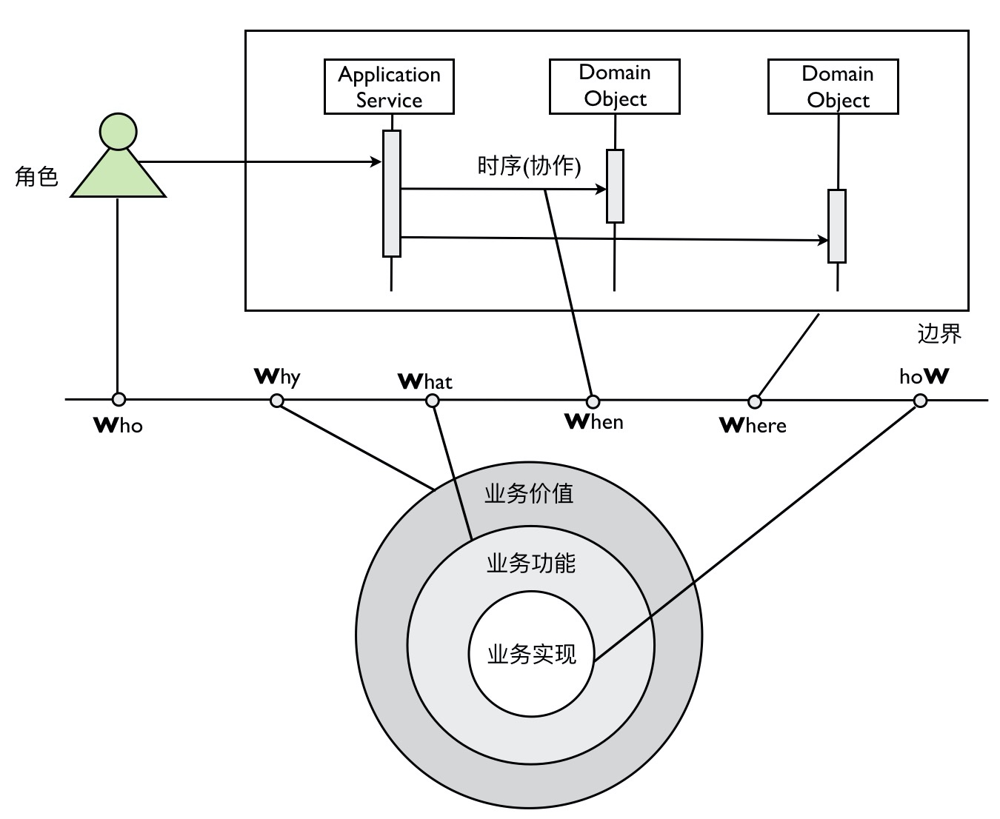

什么是领域驱动
- 问题域——客户的需求
- 解决方案域——需求的实现
问题->领域->业务逻辑->规模->结构->实现
DDD为什么突然火了
微服务
纵观软件设计的历史，不是分久必合、合久必分，而是不断拆分、持续拆分的微型化过程。
限界上下文(Bounded Context)有利于确定微服务的划分
DDD的价值
应对软件复杂度
- 从领域出发，保证软件分析模型和设计模型一致，业务人员和开发协作，保证软件质量
- 提出统一语言，确保所有概念在各自的上下文中清晰无歧义
- 提出分层架构，有效分离业务和技术，同时从垂直方向上做分隔职责边界
- 战略设计通过拆分子域和限界上下文，从横向上分隔离职责边界
- 战术设计通过引入多种领域模型概念帮助领域模型设计落地
软件为什么会复杂
主观可控：
- 业务规则 复杂
- 需求变化 不可预测
- 规模变 大
- 结构变 复杂
- 技术选型 升级
主观不可控：
- 人不够
- 人员流动
- 时间紧
- 组织架构不合理
如何应对软件复杂
关注点分离（Separation of Concern）
- 分离业务和技术
- 六边形架构
- 整洁架构
- DIP (Dependency inversion principle)
- Interface-Oriented Programming
- Dependency Injection
- 分离职责
- 分层
- UI层（User Interface Layer）
- 应用层（Application Layer）
- 领域层（Domain Layer）
- 技术设施层（Infrastructure Layer）
- 限界上下文
- 领域
- 分层


DDD的设计过程

战略设计阶段
- 问题域
- 限界上下文（Bounded Context）
- 上下文映射（Context Map）
- 核心域（Core Domain）
- 子域（Subdomain）
- 架构
- 六边形架构
- 整洁架构
- CQRS
- Event Sourcing
战术设计阶段
- 值对象（Value Object）
- 实体（Entity）
- 领域服务（Domain Service）
- 领域事件（Domain Event）
- 资源库（Repository）
- 工厂（Factory）
- 聚合（Aggregate）
- 应用服务（Application Service）

一个完整的生命周期
| 阶段 | 参与者 | 产出物 |
|---|---|---|
| 需求 | 产品经理、客户 | 需求文档 |
| KickOff | 产品经理、客户、开发负责人、测试负责人 | 明确利益相关人、对业务的共同理解、识别主要用户故事 |
| 事件风暴 | 领域专家、产品经理、DDD专家、架构师、相关开发 | 统一语言、领域模型 |
| 架构设计 | 架构师、DDD专家 | 代码包结构、技术选型、系统间通信方式 |
| 开发 | 架构师、开发 | 单元测试、代码实现 |
| 演示 | 产品经理、开发负责人、测试负责人、领域专家、客户 | 客服意见 |
| 测试 | 测试 | 测试报告 |
| 交付 | 运维、开发、测试 | 服务 |
领域模型的提炼

6W模型
- Who: 角色，一个场景中参与的用户是什么角色
- Why: 价值，解决用户什么问题
- What: 功能，需要做什么
- When: 流程，具体的业务逻辑是什么
- Where: 边界，场景的边界
- How: 实现，具体的技术实现
如何实施6W模型
1. 用例
用例名称：批量增加主机
用例目的（Why）：本用例可以帮助「角色（Who）」为其微服务一次性关联（What）符合「条件」的主机
参与者（Who）：「角色」
前置条件：微服务已经被纳管
基础流程（When）：
1. ……
2. ……
3. ……
替代流程：异常情况一
替代流程：异常情况二
2. TDD
@Autowared
private HostAppService hostAppService;
@Test
// 测试方法以描述业务的形式命名
// 不要对被测试方法写单元测试，要对领域场景编写，驱动我们识别场景分解任务
public void should_return_100_when_100_valid_hosts_registered_successfully() {
// given 驱动我们思考对象的创建，与其他对象的协作，领域对象的命名（统一语言）
Microservice microservice = Mock.one(Microservice.class);
List<Host> validHosts = validHosts(100);
// when 驱动我们思考职责边界、方法的命名、入参
int successAmount = hostAppService.registerHostsForMicroservice(microservice, validHosts)
}
// then 驱动我们思考方法的返回值、对系统的其他影响
AssertThat(successAmount, is(100));
统一语言
- 通过事件风暴获得统一语言的中文
- 标注对应英文
- 引入局外人对用例的阐述进行提问
- 统一语言要具备专业性（水，H2O）